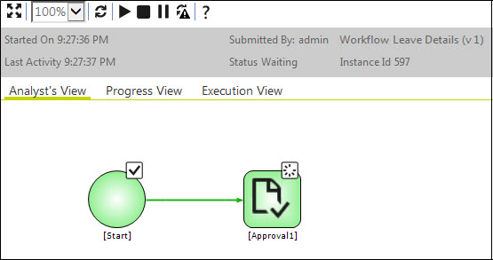
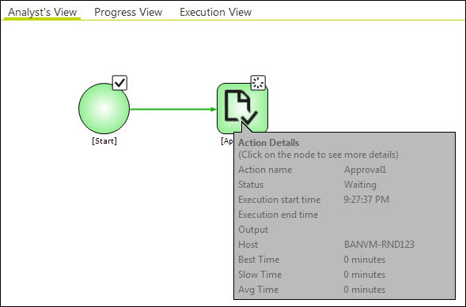
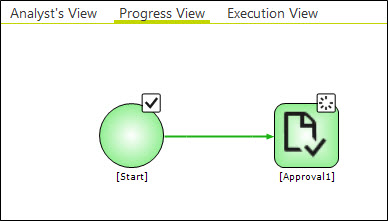
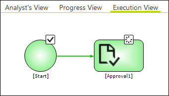
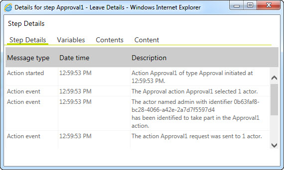
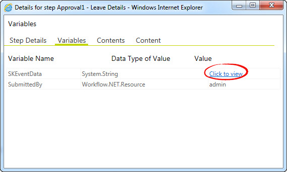
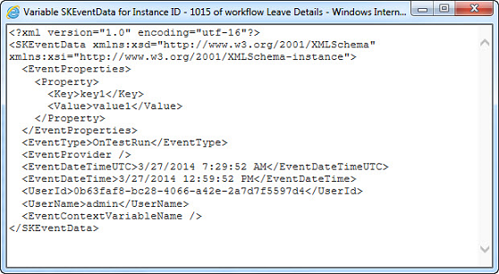
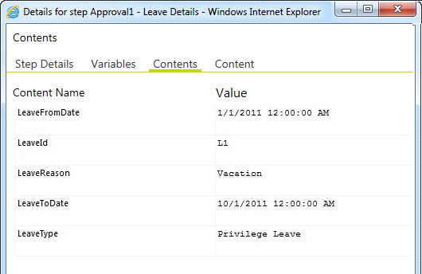
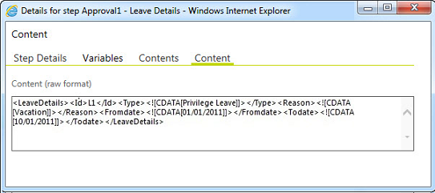
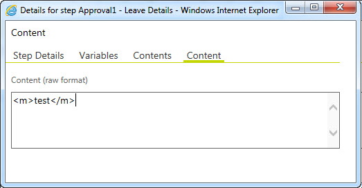

No
The Process Execution Views show the workflow execution status graphically. You can view the Execution View window by double-clicking a top level row in any of the reports. The View represents the workflow up to the activity or execution status where the View was opened.
The toolbar at the top of the Execution View window has the following tools:
Tip: The Process Execution Views are very useful in navigating through large process definitions. You can click any activity in the View window to open the process definition in the Process Designer, at that point.
Note: A green circle, with a white check mark superimposed, is used to denote a completed activity or process. It is displayed on the top edge of the activity icon for all completed activities. This icon is displayed at the top right corner of the page on the title bar to denote a completed process.
There are three tabs at the bottom to navigate between the following three views:
Analyst's View
The Analyst's View is a simplified view of the process design intended for end-users. It shows the process model that was saved as the Business Analyst's View after the business process modeling was completed and before the automation steps were added in the Process Designer. At this stage, the model would have been saved to a file. This file should be assigned to the Analyst's Process Model Filename for Execution View property of the Start activity to enable this view. In the following example shown, the Analyst's View has been opened by double-clicking the first row, which has been highlighted.

When you hover the cursor over a workflow activity in the Process execution view screen, it shows the Action Details, Best Time, Slow Time, Average Time taken by the activity for a workflow instance, as shown in the following image.

Progress View
The Progress View shows the workflow progress on the Process Diagram, up to the point that the Execution View is selected. It consists of the execution view mapped on to the Process Diagram. You can click on a completed activity to view the Step Details Window. You can view the step details, variables, contents, and content (raw content passed to the workflow) using the corresponding tabs. The links that have already been traversed are represented by thick lines.

Execution View
The Execution View shows the workflow execution status up to the point that the Execution View is selected. This View is identical to the Graphical View of Workflow Execution that was available in the Report Control of the earlier versions.

When you click the Approval activity, the Details page appears and displays the Step Details of the activity. The details screen shows information under the following five tabs - Step Details, Variables, Contents, Content, and Submitted Form Details.
In the Step Details tab, the user can view all the details related to the Approval activity, such as the time of the action, type of action, name of the actor to whom this action has been assigned to, and the action performed by the actor

When you click the Variables tab, the screen showing the details of all the variables used in this activity will be displayed. You can view the runtime values of the XML variable by clicking the Click to view link.


When you click the Contents tab, the contents specified in the activity will be displayed. The Contents are the data which can be passed to the workflow while calling Client. Execute API as an XML. They have to be declared in the Start activity along with the Xpath expression.

The raw format of the information given in the Contents tab will be displayed in the Content tab.

When you click the Content tab, the data which will be passed to the workflow while calling Client.
Execute API as an XML will be displayed.
